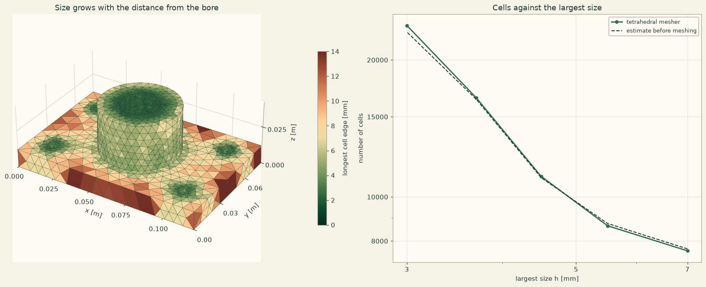

Docs › Examples › Adjusting the element size of an unstructured mesh
Meshing · 3D
Adjusting the element size of an unstructured mesh
A flanged boss with a bore and four bolt holes, meshed again and again to show what each size control of the tetrahedral mesher does.
Run locally with OneSimulation. The example downloads are free. Running them requires an activated runtime. Runtime Alpha 0.2.1a7 · CPython 3.13 on macOS (Apple Silicon), Ubuntu 22.04 (x86-64), and Windows x64. Installation and activation · View pilot plans. Scope of the reference checks.


What it computes
OneSimulation builds the part with its CAD objects and meshes it at five predefined degrees of fineness and with each control on its own: largest size, curvature angle, grading, smallest size, cells across walls, a size on the bore wall, a size growing with the distance from the bore and a size field. Before meshing, the number of cells is predicted from the face mesh and the points the mesher will place inside.
What it checks
Every mesh matches the closed-form volume of 152.692 cm3 within 0.46 %; the cell count ranges from 3,099 (very coarse) to 45,316 (very fine) and from 3,897 to 46,878 cells for the single controls, and the estimate made before meshing hits the actual count within 1-3 %.
The notebook
The complete notebook, cell by cell. Run it to produce the figures and the comparison printout.
An unstructured tetrahedral mesher decides the size of every cell from a few controls. This tutorial changes them one at a time on the same part and shows what each one does:
| control | keyword of TetrahedralMesher | acts |
|---|---|---|
| largest size | target_size | everywhere: no cell is larger |
| curvature | curvature_angle | on curved faces and edges: one cell turns by at most this angle |
| grading | grading | between fine and coarse regions: largest change of size per unit length |
| smallest size | minimum_size | everywhere: no cell is asked to be smaller |
| thin walls | gap_cells | across gaps and walls: least number of cells |
| size on faces, edges, points, bodies | refinements=(LocalRefinement(...),) | on the selection |
| size by distance | refinements=(DistanceRefinement(...),) | grows from a face, edge or point |
| size field | size_field=lambda points: ... | wherever the function says |
fineness(part, level) bundles the first five into the five usual degrees from very_coarse to very_fine, scaled to the diagonal of the part.
Reference. The volume of the part in closed form, \(V = LWt - 4\pi r_h^2 t + \pi R^2 h - \pi r_b^2 (t+h)\); a full turn of a circle of the bore takes about \(2\pi/\alpha\) cells for the curvature angle \(\alpha\); and the number of cells of every mesh is predicted before the body is filled (estimated_cells), from the triangles on the faces and the points inside.
import numpy as np
from onesim.cad.d3 import Box, Cylinder, UnionFromObjects
from onesim.meshing import (
DistanceRefinement,
LocalRefinement,
TetrahedralMesher,
estimated_cells,
fineness,
fineness_levels,
)
from onesim.meshing.quality import quality
from onesim.visualization import plots, theme
theme.set()Geometry
A base plate of 120 x 80 x 12 mm with four bolt holes of 8 mm and a boss of 50 mm diameter and 30 mm height with a bore of 24 mm through boss and plate. UnionFromObjects joins plate and boss into one body with new face identifiers; hole and the subtraction of a named cylinder add the bores, whose walls keep the names hole.outer_wall ... and bore.outer_wall.
length, width, plate, radius, height, bore, bolt = (
0.12,
0.08,
0.012,
0.025,
0.03,
0.012,
0.004,
)
part = UnionFromObjects(
objects=[
Box(length=length, width=width, height=plate),
Cylinder(radius=radius, length=height, origin=(length / 2, width / 2, plate)),
]
)
for x, y in [(0.015, 0.015), (0.105, 0.015), (0.015, 0.065), (0.105, 0.065)]:
part = part.hole(2 * bolt, at=(x, y, plate))
part = part - Cylinder(
radius=bore, length=plate + height, origin=(length / 2, width / 2, 0.0)
).named("bore")
faces = part.boundaries
exact = (
length * width * plate
- 4 * np.pi * bolt**2 * plate
+ np.pi * radius**2 * height
- np.pi * bore**2 * (plate + height)
)
print(f"{len(part.faces)} faces, {len(part.edges)} edges")
print(f"volume: CAD {part.measure * 1e6:.4f} cm3, closed form {exact * 1e6:.4f} cm3")
view = plots.Camera(elevation=32, azimuth=-58)
normal = TetrahedralMesher(**fineness(part, "normal")).generate(part)
fig = plots.figure(1, 2, size=(16, 6))
plots.geometry(
part, camera=view, title="Flanged boss with its face identifiers", ax=fig[0]
)
plots.mesh(
normal,
groups=("all",),
legend=False,
camera=view,
title=f"Fineness 'normal': {normal.cell_count} tetrahedra",
ax=fig[1],
)
plots.show()Predefined fineness
The five degrees set the largest size from a sixth to a fortieth of the diagonal of the part, together with grading, curvature angle and gap cells. Before each mesh is made, estimated_cells lays the faces exactly as the mesher will and counts the cells that will fill the body.
levels = {level: fineness(part, level) for level in fineness_levels()}
by_level = {
level: TetrahedralMesher(**controls).generate(part)
for level, controls in levels.items()
}
estimates = {
level: estimated_cells(TetrahedralMesher(**controls), part)
for level, controls in levels.items()
}
print("fineness size [mm] angle grading cells estimate volume error")
for level, mesh in by_level.items():
print(
f"{level:12s} {1e3 * levels[level]['target_size']:9.2f} {levels[level]['curvature_angle']:6.2f} {levels[level]['grading']:8.2f}"
f" {mesh.cell_count:7d} {estimates[level]:10d} {100 * (quality(mesh)['size'].sum() / exact - 1):+12.3f} %"
)One control at a time
Starting from a largest size of 10 mm, each mesher below changes one control. The number of triangles on the bore wall and the smallest and largest cell edge show where the control acts.
base = dict(target_size=0.010)
meshers = {
"largest size 10 mm": TetrahedralMesher(**base),
"largest size 5 mm": TetrahedralMesher(target_size=0.005),
"curvature angle 1.0 rad": TetrahedralMesher(**base, curvature_angle=1.0),
"curvature angle 0.2 rad": TetrahedralMesher(**base, curvature_angle=0.2),
"grading 0.15": TetrahedralMesher(**base, curvature_angle=0.3, grading=0.15),
"grading 0.8": TetrahedralMesher(**base, curvature_angle=0.3, grading=0.8),
"smallest size 3 mm": TetrahedralMesher(
**base, curvature_angle=0.2, minimum_size=0.003
),
"two cells across walls": TetrahedralMesher(**base, gap_cells=2),
"bore wall 1.5 mm": TetrahedralMesher(
**base,
refinements=(
LocalRefinement(region=faces["bore.outer_wall"], target_size=0.0015),
),
),
"distance from the bore": TetrahedralMesher(
**base,
refinements=(
DistanceRefinement(
source=faces["bore.outer_wall"],
target_size=0.0015,
near=0.002,
far=0.03,
),
),
),
"size field along x": TetrahedralMesher(
**base, size_field=lambda points: 0.0015 + 0.12 * points[:, 0]
),
}
meshes = {name: mesher.generate(part) for name, mesher in meshers.items()}
reports = {name: quality(mesh) for name, mesh in meshes.items()}
print(
"control cells bore triangles cell edge median / largest [mm] volume error"
)
for name, mesh in meshes.items():
edges = reports[name]["longest_edge"]
print(
f"{name:25s} {mesh.cell_count:7d} {len(mesh.facets(faces['bore.outer_wall'])):12d}"
f" {1e3 * np.median(edges):17.2f} / {1e3 * edges.max():5.2f} {100 * (reports[name]['size'].sum() / exact - 1):+20.3f} %"
)
print(
f"curvature angle 0.2 rad: about {2 * np.pi / 0.2:.0f} cells around a circle of the bore; "
f"1.0 rad: about {2 * np.pi / 1.0:.0f}"
)Figure
Four of the meshes side by side: a coarse turn on the bore against a fine one, and a size that grows slowly against one that grows fast away from the fine bore. Then the size of the cells on the surface for the distance control, and the number of cells against the largest size for a series of meshes with the estimate made before meshing. The fine cells of the bolt holes and the bore stay at every largest size, so the count grows more slowly than \(h^{-3}\).
sizes = [0.007, 0.0055, 0.0045, 0.0037, 0.003]
series = [
TetrahedralMesher(target_size=size).generate(part).cell_count for size in sizes
]
predicted = [
estimated_cells(TetrahedralMesher(target_size=size), part) for size in sizes
]
exponent = np.polyfit(np.log(sizes), np.log(series), 1)[0]
print("largest size [mm] cells estimate deviation")
for size, cells, estimate in zip(sizes, series, predicted):
print(
f"{1e3 * size:17.1f} {cells:7d} {estimate:10d} {100 * (estimate / cells - 1):+10.1f} %"
)
print(
f"cells grow as h^{exponent:.2f} from 7 to 3 mm (h^-3 only once h is small against every detail and the 12 mm plate)"
)
fig = plots.figure(2, 2, size=(16, 11))
for index, name in enumerate(
[
"curvature angle 1.0 rad",
"curvature angle 0.2 rad",
"grading 0.15",
"grading 0.8",
]
):
plots.mesh(
meshes[name],
groups=("all",),
legend=False,
camera=view,
title=f"{name}: {meshes[name].cell_count} cells",
ax=fig[index],
)
plots.show()
fig = plots.figure(1, 2, size=(16, 6))
plots.mesh(
meshes["distance from the bore"],
cell_values=1e3 * reports["distance from the bore"]["longest_edge"],
limits=(0, 14),
label="longest cell edge [mm]",
camera=view,
title="Size grows with the distance from the bore",
ax=fig[0],
)
plots.line(
1e3 * np.array(sizes),
{"tetrahedral mesher": np.array(series)},
reference={"estimate before meshing": (1e3 * np.array(sizes), np.array(predicted))},
markers=True,
scale="loglog",
xlabel="largest size h [mm]",
ylabel="number of cells",
title="Cells against the largest size",
ax=fig[1],
)
plots.show()Going further
Combine controls: a LocalRefinement on a selection of edges with cells= fixes the exact number of cells along them, quality_limits=QualityLimits.finite_elements() improves the mesh until every cell keeps the limits, and size_preview(mesher, part) shows the face mesh before the body is filled.